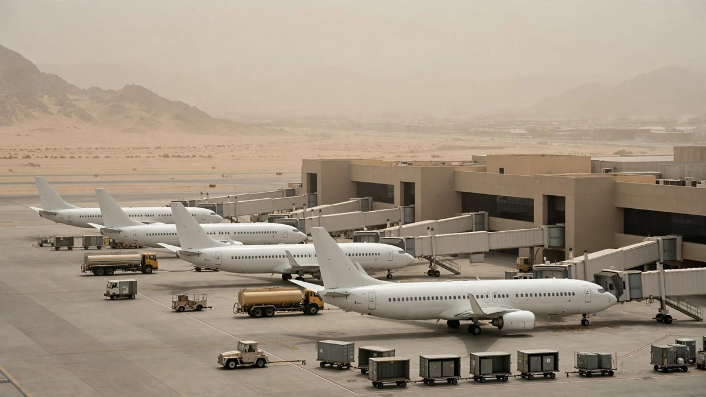

Travel

Malaysia Airlines resumes Jeddah and Madinah flights
Malaysia Airlines will fly to and from Jeddah and Madinah again from October 18, after a short suspension. The airline says the restart follows a full safety review.

Italy flights delayed by air traffic fault
Air travellers across Italy faced delays and cancellations on Friday after a technical fault affected air traffic control. Officials said the fault was not caused by malicious activity.

Sydney Airport security staff strike twice
Travellers were warned to expect delays at Sydney Airport as hundreds of security workers walked off the job for a second time in one day. Staff stopped work in the morning and again in the evening.

Record rain floods Istanbul, flights diverted
Torrential rain caused chaos across Istanbul as the city recorded its highest rainfall in more than 80 years. Flights were diverted and cancelled, schools closed, and residents were told to stay home unless travel was absolutely necessary.

IndiGo and Akasa extend Saudi flight cuts
Indian airlines IndiGo and Akasa Air have extended flight suspensions to Saudi Arabia amid escalating regional tensions and disruptions to air travel. IndiGo cancellations now run until October 24.

China Airlines raises baggage and pet fees
China Airlines will raise its fees for extra luggage and the transport of pets from October 16. The increases will amount to between 10 percent and 30 percent.